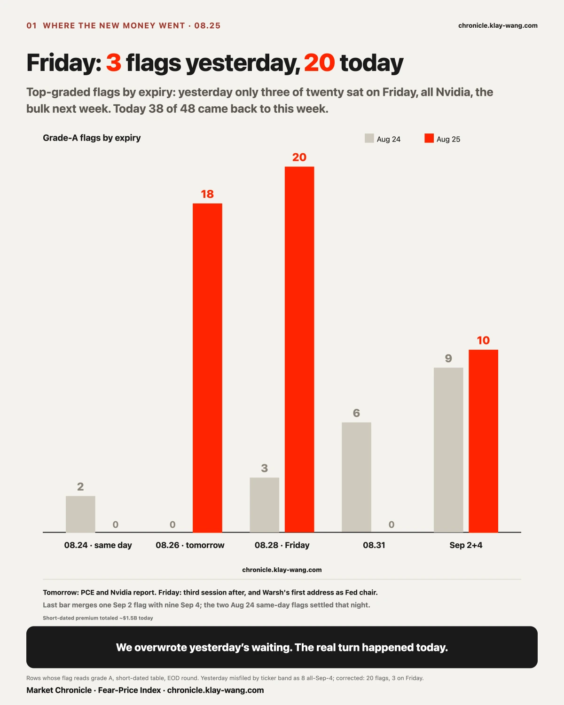
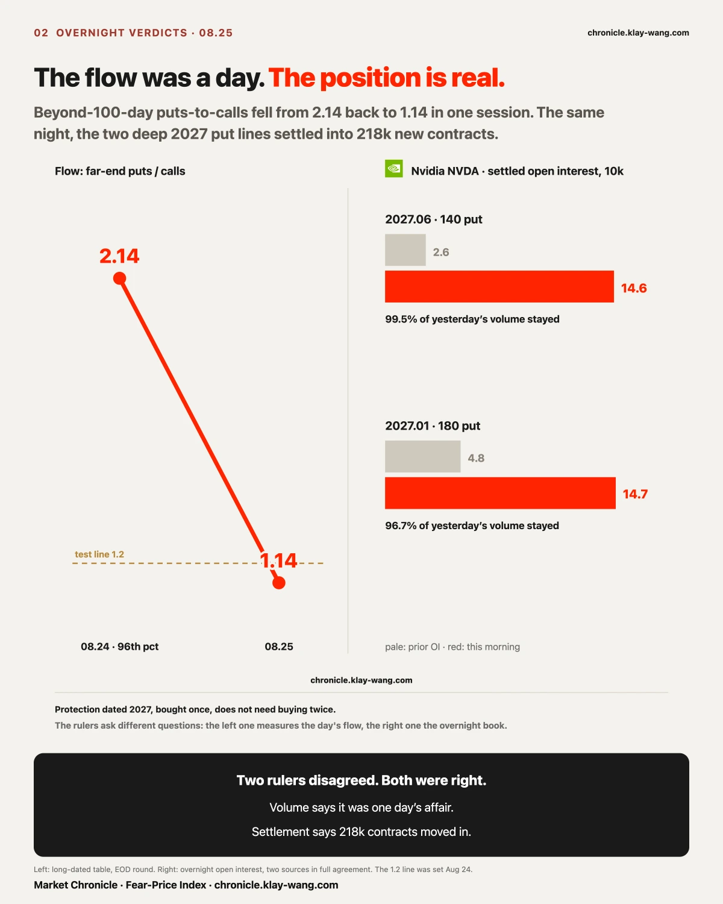
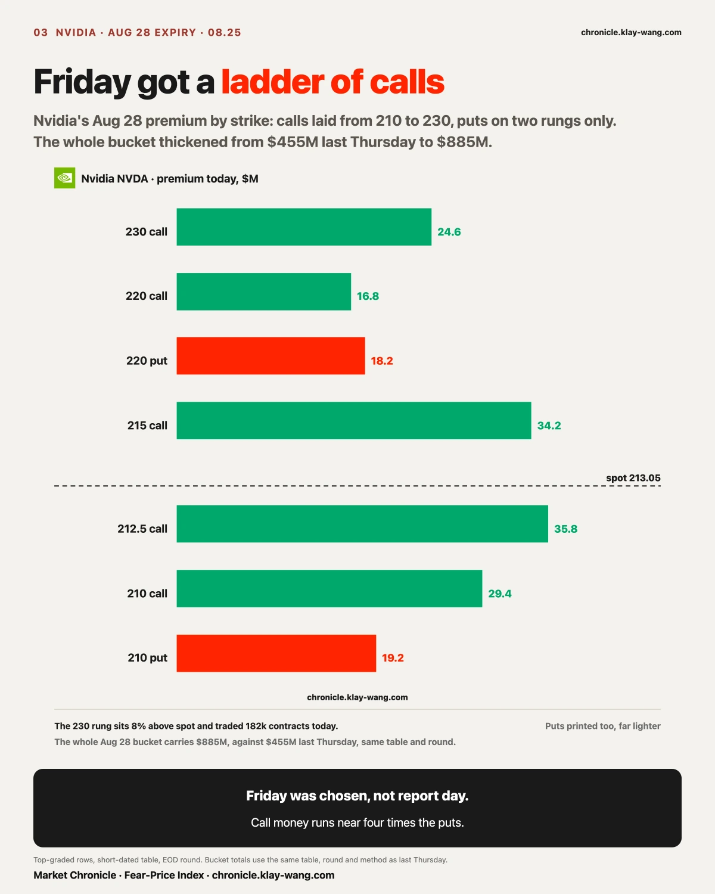
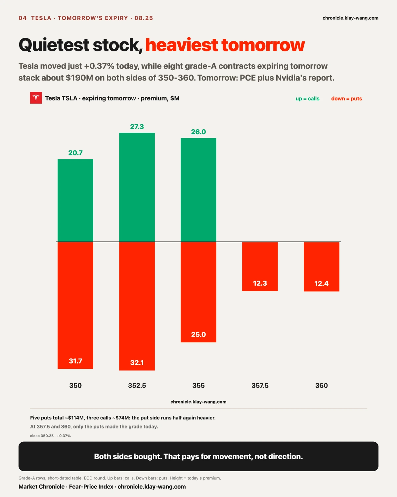
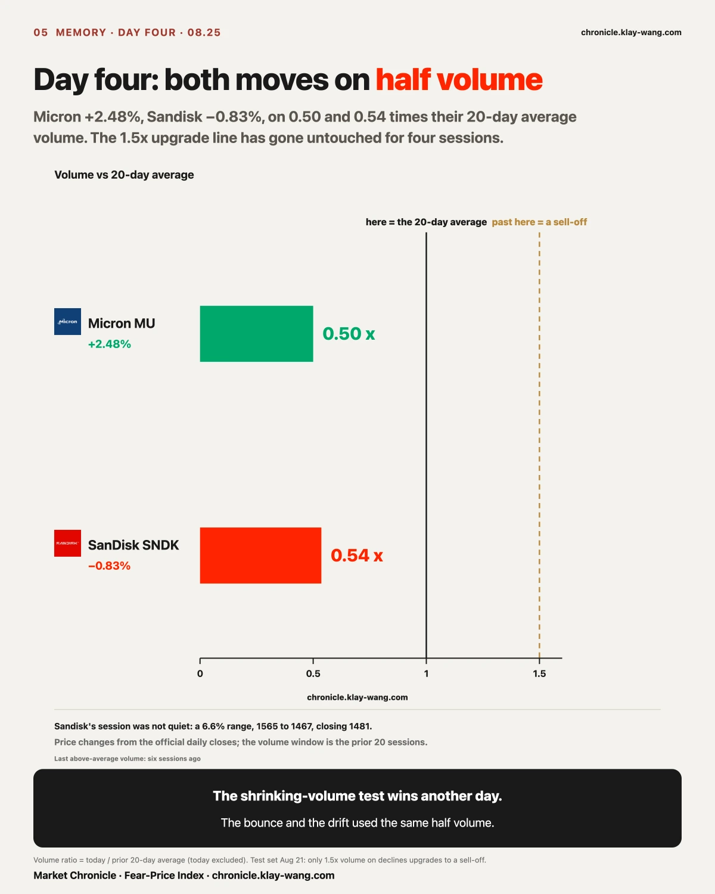
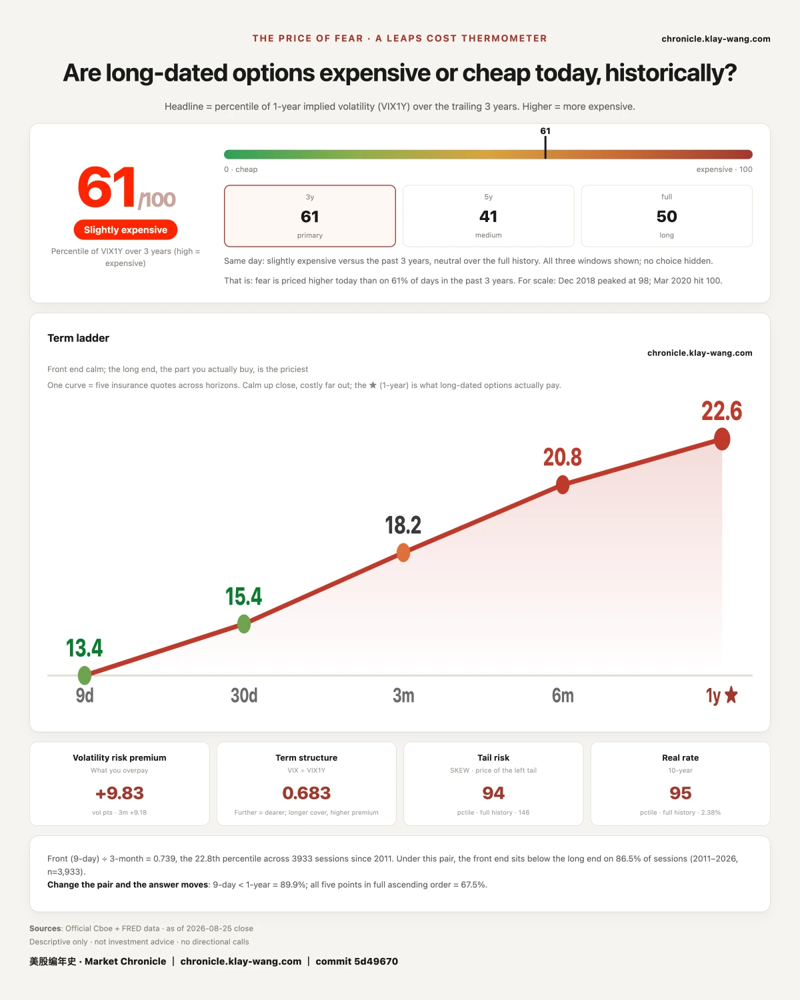

Yesterday's subject line read, everyone is waiting for this Friday and today's new money skipped it entirely.
First, a correction to a number in that sentence, dated August 25, 2026. Yesterday's letter said the eight top-graded flags all expired September 4, with none on this Friday. On review, the ruler read the wrong column: it counted the top eight rows of the highest volatility band of tickers, not the market's top-graded flags. By the correct ruler, yesterday carried twenty grade-A flags, of which three sat on this Friday, all of them Nvidia calls. The waiting was real and the bulk did sit on next week, but it was never as total as printed. A wrong number should not have gone out; it is recorded here, and the original is left unedited.
Correction made, today reads clearer, not muddier. On the last full session before the report, the waiting ended: grade-A flags went from twenty to forty-eight, eighteen expiring tomorrow, twenty this Friday, only nine still on September 4. Friday went from three flags to twenty, from one name to a field of them. Short-dated premium for the day totals roughly 1.5 billion dollars, of which Nvidia took 20.7%, against 78.3% yesterday.
The leaderboard says Nvidia closed +2.19%, ending seven straight down days on the eighth. That number is true, and it is a result. What the premium tape carries is this: twenty-four hours before the report, the paid waiting ended together.

Yesterday's letter closed with a short list of questions to be settled at this morning's settlement. Here is what came back.
Those two six-figure deep out-of-the-money put lines stayed, nearly to the contract. The June 2027 140 put traded 120 thousand contracts yesterday; open interest settled this morning at 146 thousand, up from 26 thousand, an increase equal to 99.5% of yesterday's volume. The January 2027 180 put went from 48 thousand to 147 thousand, 96.5% of yesterday's volume. Combined, 218 thousand contracts of new open interest. That is not a round trip; someone left the money on the table. The promised second source also arrived: both lines' volumes differ from the primary source by 0.013% and 0.2%. The numbers are real.
And the same day, the far-end ratio snapped back. Beyond one hundred days to expiry, puts ran 2.14 times calls yesterday, a 96th-percentile reading; today the ratio printed 1.14, back under the 1.2 line on the first session. By the test written down yesterday, that makes the spike a one-session placement on the first day after monthly expiration, not a continuing behavior.
Put the two side by side and yesterday's line, you do not have to pick one, now has its answer. The volume ruler says it was one day's affair; the open-interest ruler says the money moved in. The flow was a day; the position is real. Protection dated 2027, bought the day before the report, does not need to be bought twice.
The other two answers are less clean, recorded as they are. Nvidia's 26.3 million dollars of Friday 210 calls settled at 28 thousand open contracts against 9 thousand before, an increase equal to 35% of yesterday's volume: one third stayed, two thirds round-tripped, squarely in the middle. Amazon's August 31 deep in-the-money 220 call remains the oddest line on the tape: 620 traded, 135 stayed, neither the size of a stock-replacement position nor a clean round trip. Yesterday it had no clean explanation. What can be stated today is that it still has none.

The money came back in layers.
On Friday's expiry, Nvidia was laid a ladder of calls. The 212.5 call traded 57 thousand contracts for 35.8 million dollars in premium; the 215 call took 34.2 million; the 210 call 29.4 million; the 230 call, a strike 8% above today's close, traded 182 thousand contracts for 24.6 million. Puts printed too, 19.2 million at 210 and 18.2 million at 220, but the call side is visibly heavier. This Friday is the third session after the report, and the day Warsh gives his first address as Fed chair. The whole August 28 bucket has thickened from 455 million dollars last Thursday to 885 million today, close to a double. Last Thursday's open question, queue or conviction, settles only after the report; today records the midpoint: it did not disperse, it thickened.

On tomorrow's expiry, the heaviest money sat on Tesla. Eight grade-A contracts all expire tomorrow, strikes laid from 350 to 360: five puts totaling about 114 million dollars, three calls about 74 million, both sides bought, the three central strikes at 43 to 59 times prior open interest. Tomorrow is the day PCE and Nvidia's report land together. Tesla's stock moved just +0.37% today, the quietest of the large names, while its options priced tomorrow as the big day. Buying both sides pays for movement; the put side running half again heavier reads as caution more than excitement.
Worth pausing on: the money stacked on this Friday nearly doubled, and not one person in this market knows what will be said that day.
Warsh speaks at Jackson Hole on Friday for the first time as Fed chair. Since taking the job he has pushed one idea: less forward guidance, no more spoon-feeding the market its answers. July's post-meeting press conference was the first live test, and it went badly. He neither explained why the Fed held nor said whether hikes remain in the toolkit; long Treasuries sold off on the spot, and the thirty-year yield touched its highest level since 2007. Last week the Treasury widened its long-bond buybacks to press the long end down. That worked for less than a day.
So this Friday's money is not buying what he says. It is buying how much prices move after he says it. The difference is written into the shape of the contracts: the whole August 28 bucket thickened from 455 million last Thursday to 885 million today, and Nvidia's ladder is bought on both sides, calls running about four times the puts rather than one clean directional stack. People betting on direction concentrate on one side. People betting on movement need both. Today's shape looks like the latter.
There is a layer that says it better still. On the same day the front end paid roughly 1.5 billion for this week's three events, the one-year layer did not move, and Nvidia's own one-year strike shifted 0.13 of a point. The market's price for this speech is: worth a day of movement, not worth repricing a year. Put another way, it is pricing Warsh's reaction function, not his prepared text.
This judgment can be refuted, and here is the condition. If the one-year layer jumps once he has spoken, the market had mispriced the nature of this speech and this passage is wrong. If the one-year layer stays put while the shares swing hard that day, today's pricing was right. Friday's close settles it. No need to wait a week.
Two Google legs expiring March 19, 2027 each traded 5500 contracts today: the 480 call done in three prints, the 270 put in two. The strikes sit 38% above and 22% below today's close, on prior open interest of 563 and 2751, built nearly from zero.
Equal size, five prints: that is one decision, not a crowd's coincidence. Last Friday we verified a mid-August set of index puts whose four legs' open interest rose and stayed together, proof that a frightening ratio can be a bounded spread. The same reading applies here: one call and one put in matched size can be several different things in a trade record. The one certainty is that someone drew both far edges of Google's March 2027 in a single pass. Whether both legs' open interest survives tomorrow's settlement will say whether this structure moved in too.

The test set last Thursday keeps paying out: shrinking volume on declines is a repricing; only above 1.5 times average volume does it upgrade to a sell-off. Micron rose 2.48% today on 0.50 times its twenty-day average volume; Sandisk closed down 0.83% on 0.54 times. Half the usual volume on both. The trigger was not hit; the repricing read survives a fourth day. The same session, both names' one-year strikes eased a notch as well: Micron down 0.73, Sandisk down 1.05, the two largest declines among the seventeen. Shrinking volume in the shares and a cheaper long end are two unrelated rulers pointing at one thing.
Sandisk's session was anything but quiet though: a 6.6% intraday range, from a 1565 high to a 1467 low, closing at 1481. Big money sits on both sides of its Friday 1500 strike. The put leg carried 37.7 million dollars of premium at a concentration of 30.0%, bar coverage 86.1%, denominator verified, single denominator (OI increment unavailable), DTE=3: spread across the day, not one decisive print. The 1500 call, and Micron's 930 call for tomorrow, read concentration unmeasurable, no trusted denominator left. Unmeasurable means unmeasurable. It does not mean no decisive order, and it does not mean disregard.
Nvidia closed +2.19% at 213.05. The standing test had two arms: an eighth session closing higher on below-average volume marks the seven-day slide as drift resolved; continued heavy selling through 199.09 confirms a lower center of gravity. The close-higher arm fired, but volume ran 1.06 times the average, 0.06 above the line. The end of the slide is fact; the clean shrinking-volume shape the test asked for did not print. Recorded as at-the-line, not a clean settlement. The 199.09 level was never touched; today's low was 210.11.
One more line from the eve: the January 2027 460 call traded 11 thousand contracts, volume to open interest 0.97. That strike is 116% above today's close. On the last day before the report, someone spent all day filling a call at a doubling price a year and a half out. Its open interest reports tomorrow morning.
At 10:48 this morning a story landed: OpenAI said the inference chip it developed with Broadcom beat Nvidia's GB300 on two measures, AI work per watt and response latency. Per the day's public reporting, the test ran on a public benchmark system, and the chip it beat was the top-ranked product on that system. On the eve of the report, this is the most shareable AI-chip story available.
Then look at the price. Broadcom opened 0.65% higher, fell through the session, lost 1.21% during market hours and closed at 356.74, down 0.56% on the day. Nvidia, the name being challenged, rose 2.19% that same day, and its seven-session slide ended right there.
Then look at the side that costs money. Of the 1.5 billion dollars of short-dated premium today, Broadcom drew 16.7 million, 1.1% of the tape, twelfth of seventeen. Its heaviest single line was 2 million dollars, against 37.7 million for the day's heaviest, while Nvidia alone took 314.8 million.
A story saying A beat B, on a day A fell and B rose, with so few willing payers on A that it ranks twelfth. A price change is a result and costs nothing; premium is an opinion and costs money. On the side that costs money, this story left nothing behind.
Tomorrow settles it: if Broadcom's premium jumps into the top five, today was slow digestion; if it stays outside the top ten, the market has finished pricing this story, and the price it arrived at is that the story is not worth paying for.

While the week's money pressed in, the one-year price of fear got cheaper: 61 against 63, on a day the index did not fall. Last week's mechanical explanation, an expiry roll lifting the reading, required the number to climb back above 68; it fell instead, and the explanation is withdrawn. From here the level reads as a level. The short end is paying for three big events; the long end declined to raise its price for a second straight session. This number does not say where tomorrow goes. It says the people who must quote the next year, and pay when they quote it wrong, marked their price down a notch today.
The same split is sharper on single names. Nvidia reports tomorrow night, took the day's second-heaviest short-dated premium, and saw its Friday bucket nearly double; its one-year strike moved 0.13 of a point, from 40.14 to 40.01. The front end is pricing tomorrow night. The long end did not raise an eyebrow. The fear is about tomorrow night, not next year.
No instructions, only translations.
If you hold Nvidia or trade around its report: yesterday's money waited, today's money entered, and the call ladder is laid on Friday between 210 and 230. The report is tomorrow after the close, but the bulk of today's premium is pressed onto Friday, with PCE and Warsh's first address in between. Know which day the money you follow is actually on.
If you hold Tesla: the quietest large-cap stock of the day carries about 190 million dollars stacked on both sides of tomorrow's expiry. The market paid the day's heaviest price for its movement tomorrow. Nobody picked the direction for you.
If you hold memory: a fourth straight session where neither the up moves nor the down moves used more than half the usual volume. The 1.5-times upgrade line has not been touched once; the repricing read lives another day.
If you hold nothing and are waiting: yesterday the board carried only September money; today this week's money returned, and the one-year price of fear got cheaper anyway. When the two ends disagree you do not have to arbitrate, just note who paid.
Waiting is a position, and its end carries more information than its existence. Friday went from three flags to twenty, and the turn came twenty-four hours before the report. A miscounted number got corrected the same day; that too is part of this ledger.
Flow and open interest are two rulers. Volume says the far-end protection was one day's affair; settlement says all 218 thousand contracts moved in. When the rulers disagree, wait one overnight settlement; most of the time each was right about its own question.
Nvidia reports tomorrow night and took the day's second-heaviest short-dated premium, while its one-year strike moved 0.13 of a point. The fear is about tomorrow night, not next year.
The 885 million on August 28: if it falls by more than half after tomorrow night's report, the thickening since last Thursday was a queue ahead of the event; if it keeps thickening, the money is buying the stretch after the report. Short-dated table, EOD round only, same table and method as last Thursday's 455 million.
Google's two March 2027 legs, 5500 each: if both legs' open interest survives tomorrow's settlement, one structure moved in; if only one leg stays, read them apart. Taken by August 26 or abandoned with a stated reason.
Nvidia's 11 thousand January 2027 460 calls: open interest against today's volume tomorrow morning; toward 1 is a new position, back to prior levels a round trip. Taken by August 26.
Tesla's eight contracts expire tomorrow and settle themselves. Range beyond what the premium implied and the payers win; anything less and the sellers keep everything.
The long end against the front end: Nvidia's one-year strike printed 40.01 today against 40.14 yesterday. If it jumps more than two points after tomorrow night's report, today's stillness was pre-event waiting; if it holds near 40, the long end never treated this report as something that changes the shape of a year. Same table, same strike, same method: the September 17, 2027 expiry, nearest to the money.
The nature of Friday's pricing, settled at Friday's close: today's judgment is that the market priced this speech as worth a day of movement and not worth repricing a year. If the one-year layer jumps after he speaks, the judgment is wrong and will be recorded as wrong. If the one-year layer holds while intraday ranges widen sharply, it stands. Same table, same method, the September 17, 2027 expiry nearest the money.
Broadcom's premium rank: 16.7 million today, 1.1% of the tape, twelfth of seventeen. Into the top five tomorrow and the Jalapeno story was merely slow to digest; still outside the top ten and the market has finished pricing it. Short-dated table, EOD round, premium summed by ticker.
Persistence of the migration: if tomorrow's top flags stay concentrated on this week, today was event pricing; if they flow back to September 4, today was a one-time reshuffle before the report.
Fear-Price after 61: a second straight day of a non-falling index and a falling reading. Last week's mechanical explanation, expiry-roll lifting the number, did not come true and is withdrawn. From here the level is read as a level.
No stock picks, no signals, no P&L bragging. A judgment-backed read of the market's temperature, the market's, not your trades. Not investment advice.
Fear-Price Index · 2026-08-25 · reading 61/100: The one-year volatility benchmark VIX1Y stands at 22.61, in the 61st percentile of the past three years. Higher means fear is priced dearer. Daily ledger and methodology → chronicle.klay-wang.com · Attribution: Fear-Price Index · Market Chronicle